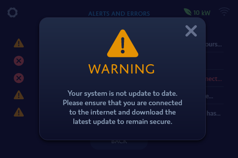
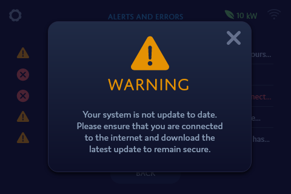

Job Title: UX Designer at Plasmatic Technologies
Project Types: Alana Keypad prototype, infographic, standing banners, business card, and holiday cards.
Year: 2017
Plasmatic Technologies is developing solutions that enable forward-thinking service providers and their customers to benefit from Connected Home devices and the tremendous data they produce. Alana offers connected home solutions including the world's first truly connected security keypad.
I was responsible for the UI/UX design of the Alana keypad prototype, a home-security keypad that connects and controls all smart devices within a home. I also created corporate graphic design materials for Plasmatic, and worked with the CEO and the marketing team through an iterative process, ensuring that I was communicating Plasmatic's messages with eye-catching and creative designs.
The prototype screens display user features similar to current security keypads. The prototype uses the Bank of Montreal's color scheme as a test color scheme because the interface is supposed to be adaptable to different company colors. The user is able to choose different modes to arm their keypad with from the dashboard, as well as view the zones in their house and bypass any if necessary.
I designed the Alana Keypad prototype to not only meet product and business requirements, but also to change the perception of home security keypads as being complex, confusing, and outdated. Alana was the company's main product during my work term, and I worked with the CEO, business leads, and engineers to deliver designs.


 

To identify the needs of users for a home security keypad, due to limited time for research, I spoke to people in-house who currently used security keypads, and learned of experiences of current keypads, including desires and pain points. I looked at personas of users that had already been developed before I started at my position, and at how the keypad would interface with its mobile app (being designed by another designer). I also did secondary research online about security keypads and looked at a few real security keypads that we had in the office. All home security keypads at the time had interfaces limited to monochromatic screens similar to calculators.
So how could I design an interface for a product that had never had digital touchscreen interface before? Another product of a similar size that was touchscreen and had millions of different digital interfaces were smart phones. Our security keypad and smartphones shared basic concepts, such as small touchscreens, informational displays, and messages. I researched existing smart home mobile apps and online sources such as Behance for smart home mobile app designs to gain inspiration and creative understanding.
I began designing the home screen (dashboard), starting with low-fidelity wireframes, and came up with several ways users could interact with the screen. At the time, the home screen requirements were to have different modes for the user to switch between and to have some way to view house zones. My goals for the home screen were:
I also made the decision to go for flat design because it is not only in trend, but also seen as 'modern'. Current security keypads in the market look outdated and old, as though they were made in the early 2000's.
I, as well as Plasmatic, wanted the Alana keypad to look like the future.
I had intially designed a style guide for Alana as a brand. However, a new challenge in the form of a business requirement came up later, which was for the keypad interface to have a flexible primary and secondary color that could adhere to client brand colors. I edited my design to accomodate for such a feature by choosing a design where the primary color is prominent, with a secondary color accent.
This could provide branding, while still keeping a clean visual design with minimal color clashing.

The purpose of the Smart Home Infographic is to inform the Insurance and Smart Home industry of the benefits of home telematics for the Home Insurance industry. Originally, I was given an idea of the content for the infographic but no direction. My process began with researching other infographics of different industries (particularly the automobile industry) and statistics regarding home insurance. I designed an infographic with information I found online and in the Plasmatic whitepaper to communicate the importance of home telematics data. I revised the infographic after every session of feedback I received from the VP of Marketing.
The infographic was a large project with a very iterative process, as the company had specific information and visuals they wished to convey to the Home Insurance industry.
This Plasmatic Banner was the first in two standing banners I created to be displayed at the 2018 Consumer Electronics Show in Vegas. I focused on communicating Plasmatic's brand identity through corporate colors and the use of curves to relate to connectivity.

The Alana product banner was created with a similar style to the Plasmatic Banner for consistency. I used a combination of the Plasmatic and Alana product blues to maintain strong company and product branding.
My process in creating the business card was by beginning with many sketches of various concepts. I was inspired by the company's logo and wanted to bring that into the design. My company wanted a business card that was simple on the front and creative on the back. Hence, I recreated the shapes from the logo on the back of the card while mirroring the semicircle shape on the front.

As the holiday season was approaching during my term at Plasmatic, I was tasked to create two holiday cards for the company - one for the company party and one as a general holiday greeting. The cards were requested to stay neutral to any specific holiday.